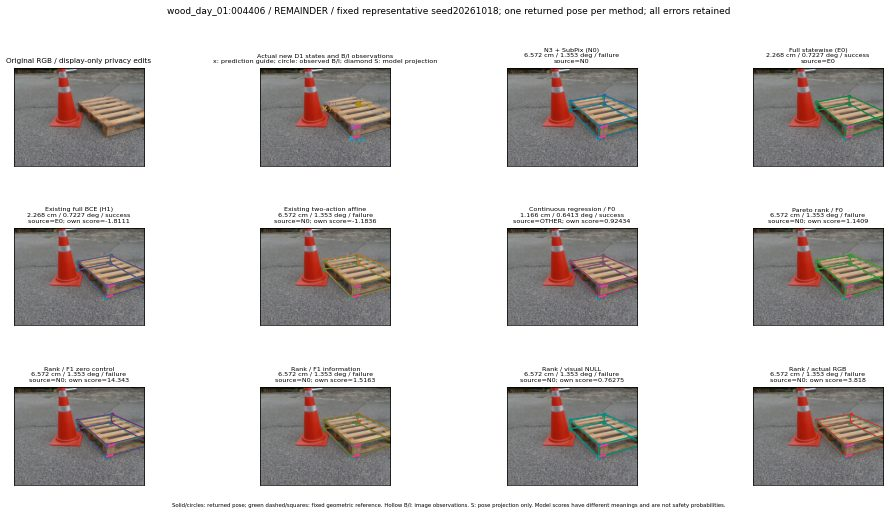

실선은 반환 자세, 초록 점선은 고정 기하 참조입니다. S는 영상 관측이 아닙니다. 점수는 모델별 의미가 다르며 보정된 안전 확률이 아닙니다. 개인정보 처리는 표시 사본에만 적용했습니다.
| 방법·seed | 위치 / 회전 / 공동성공 | 실제 출처 | 선택 후보 | 각 모델 자체 점수 |
|---|---|---|---|---|
| N0 | 6.572 cm / 1.353 deg / failure | N0 | N/A | N/A |
| E0 | 2.268 cm / 0.7227 deg / success | E0 | N/A | N/A |
| E0_REGENERATED | 2.268 cm / 0.7227 deg / success | E0 | E0_REGENERATED | N/A |
| POSEFIX_SUBPIX_PF_ANCHOR | 7.43 cm / 1.617 deg / failure | OTHER | N/A | N/A |
| POSEFIX_SUBPIX_YOLO_ANCHOR | 7.43 cm / 1.617 deg / failure | OTHER | N/A | N/A |
| D1_H1_MLP_s20261018 | 2.268 cm / 0.7227 deg / success | E0 | E0_REGENERATED | -1.8110896348953247 |
| D1_H1_MLP_s20261019 | 2.268 cm / 0.7227 deg / success | E0 | E0_REGENERATED | -2.305476665496826 |
| D1_H1_MLP_s20261020 | 2.268 cm / 0.7227 deg / success | E0 | E0_REGENERATED | -1.3721774816513062 |
| D1_H1_PAIR_MLP_s20261018 | 6.572 cm / 1.353 deg / failure | N0 | N0 | -2.160166025161743 |
| D1_H1_PAIR_MLP_s20261019 | 6.572 cm / 1.353 deg / failure | N0 | N0 | -1.7636390924453735 |
| D1_H1_PAIR_MLP_s20261020 | 6.572 cm / 1.353 deg / failure | N0 | N0 | -1.7465083599090576 |
| D1_H1_PAIR_ROLE_AFFINE_s20261018 | 6.572 cm / 1.353 deg / failure | N0 | N0 | -1.1835906505584717 |
| D1_H1_PAIR_ROLE_AFFINE_s20261019 | 6.572 cm / 1.353 deg / failure | N0 | N0 | -1.3487443923950195 |
| D1_H1_PAIR_ROLE_AFFINE_s20261020 | 6.572 cm / 1.353 deg / failure | N0 | N0 | -1.2796289920806885 |
| R_CONT_F0_s20261018 | 1.166 cm / 0.6413 deg / success | OTHER | G10/ORIGINAL_WD/endpoint/11 | 0.9243362545967102 |
| R_CONT_F0_s20261019 | 6.572 cm / 1.353 deg / failure | N0 | N0 | 1.0179448127746582 |
| R_CONT_F0_s20261020 | 1.166 cm / 0.6413 deg / success | OTHER | G10/ORIGINAL_WD/endpoint/11 | 0.8977524638175964 |
| R_ORDER_F0_s20261018 | 6.572 cm / 1.353 deg / failure | N0 | N0 | 1.1409012079238892 |
| R_ORDER_F0_s20261019 | 6.572 cm / 1.353 deg / failure | N0 | N0 | 7.831875801086426 |
| R_ORDER_F0_s20261020 | 6.572 cm / 1.353 deg / failure | N0 | N0 | -6.880532741546631 |
| R_ORDER_F1_ZERO_s20261018 | 6.572 cm / 1.353 deg / failure | N0 | N0 | 14.3429536819458 |
| R_ORDER_F1_ZERO_s20261019 | 6.572 cm / 1.353 deg / failure | N0 | N0 | 4.116149425506592 |
| R_ORDER_F1_ZERO_s20261020 | 6.572 cm / 1.353 deg / failure | N0 | N0 | 11.356428146362305 |
| R_ORDER_F1_s20261018 | 6.572 cm / 1.353 deg / failure | N0 | N0 | 1.516343116760254 |
| R_ORDER_F1_s20261019 | 1.166 cm / 0.6413 deg / success | OTHER | G10/ORIGINAL_WD/selected | 3.873573064804077 |
| R_ORDER_F1_s20261020 | 6.572 cm / 1.353 deg / failure | N0 | N0 | 0.3939597010612488 |
| V_ORDER_NULL_s20261018 | 6.572 cm / 1.353 deg / failure | N0 | N0 | 0.7627518773078918 |
| V_ORDER_NULL_s20261019 | 1.166 cm / 0.6413 deg / success | OTHER | G10/ORIGINAL_WD/endpoint/11 | 1.4222806692123413 |
| V_ORDER_NULL_s20261020 | 6.572 cm / 1.353 deg / failure | N0 | N0 | 4.80637788772583 |
| V_ORDER_RGB_s20261018 | 6.572 cm / 1.353 deg / failure | N0 | N0 | 3.817964553833008 |
| V_ORDER_RGB_s20261019 | 1.166 cm / 0.6413 deg / success | OTHER | G10/ORIGINAL_WD/endpoint/5 | 1.7332744598388672 |
| V_ORDER_RGB_s20261020 | 7.455 cm / 81.27 deg / failure | OTHER | G13/SWAPPED_WD/endpoint/383 | -7.065700531005859 |